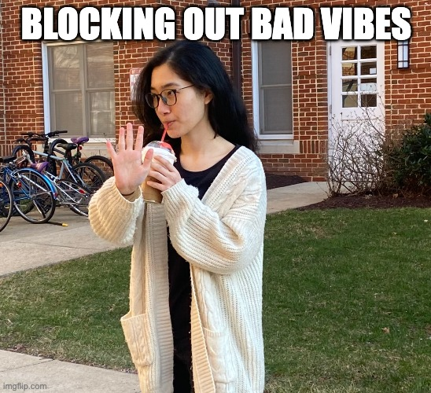

I'm Minh Nhat

I am a freshmen studying Computer Science at the University of Maryland, College Park.
I love cooking, eating, and spontaneous trips.
Skills: Python, Java, JS, HTML/CSS, Data Visualization, Streamlit
Current project: Google Chrome Extension for quick saving link tabs (started 25 Mar 2022)